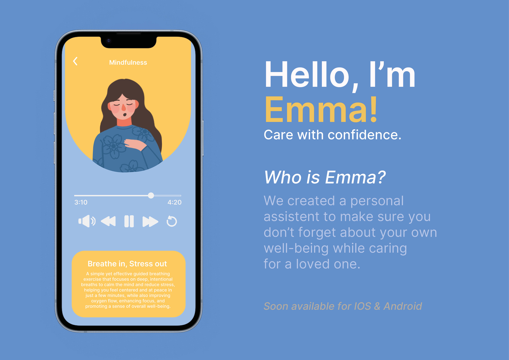
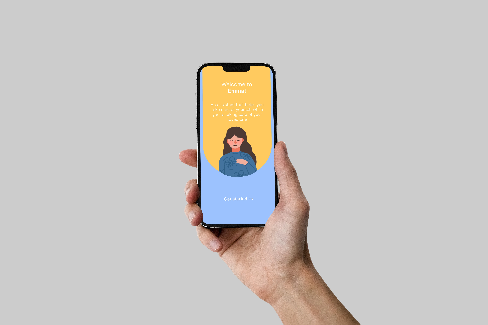
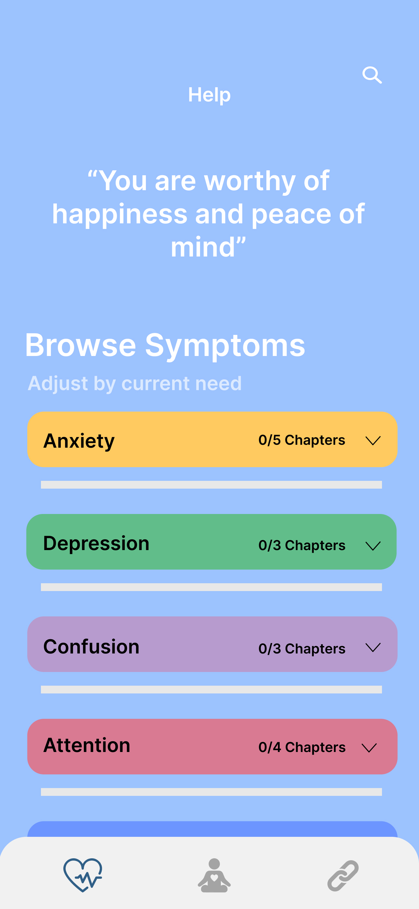
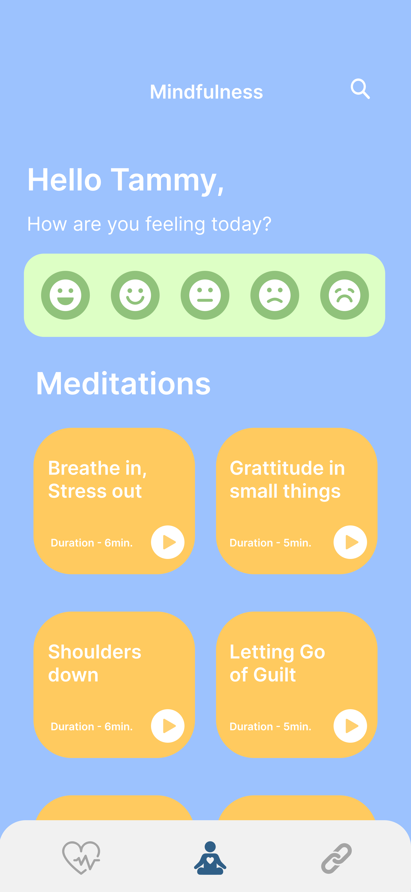
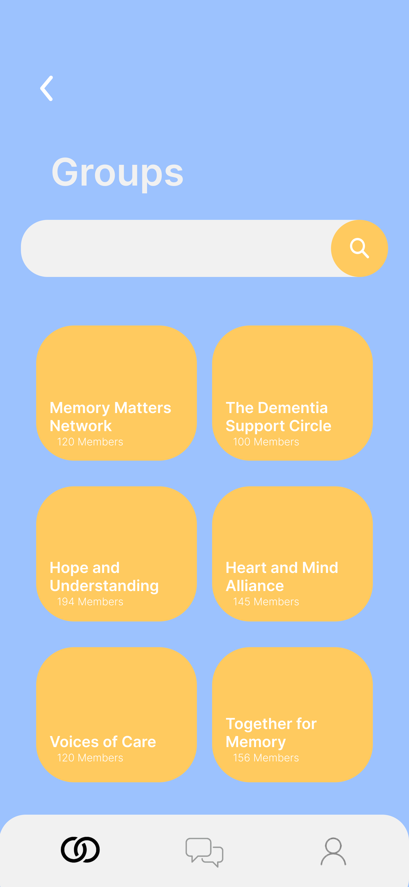
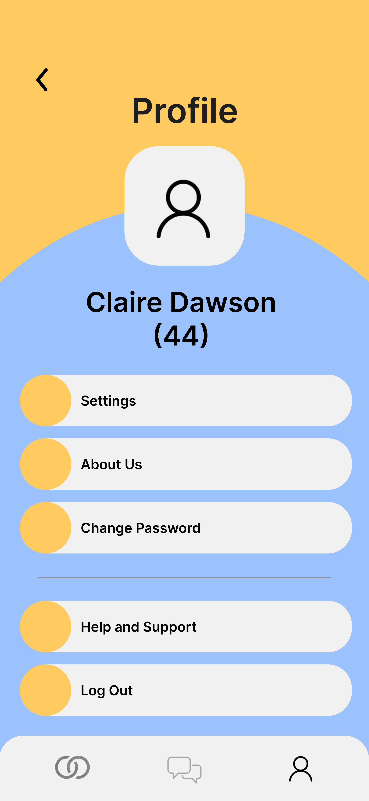
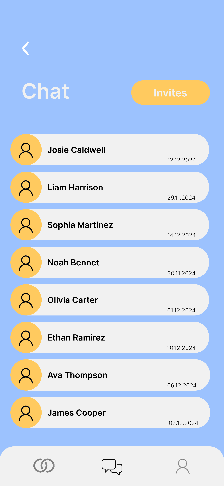
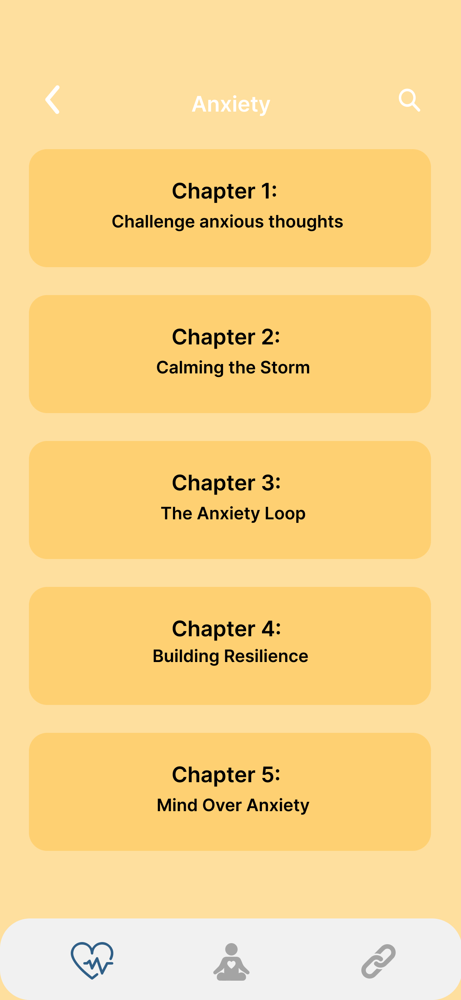

UX Research & App Design
A five-week project to design a support app for people over 40 caring for loved ones with dementia, combining mindfulness, education, and community into one accessible, calming experience.

01 Context & problem
Caregivers of people with dementia face a specific and underserved problem: they're so focused on the person they're caring for that their own mental health is neglected. High stress, lack of structured guidance, and social isolation are the norm - not the exception.
When we looked at the market, nothing existed that helped caregivers take care of themselves while taking care of their loved ones. That gap was the brief.
The five-week NHL Stenden brief asked us to develop a concept, visual design, and interactive prototype. I led research and project management while working alongside two UI/UX designers, with responsibility for the illustration work throughout.
The project ultimately came close to winning the award for best idea - a result of the depth of the empathise phase and how directly the research shaped our design decisions.
02 Research
Research approach
Methods map
Survey
Challenges in caregiving
Survey
Social isolation frequency
Survey
Age distribution of caregivers
Research synthesis
Persona - Emma Johnson
Emma Johnson
Administrative Assistant (part-time)
"I love my mom and want to do everything I can for her, but sometimes it feels overwhelming. I wish there were more hours in the day and someone to tell me I'm not alone in this."
Practical
Emotional
Practical
Emotional
We ran surveys, interviews, and a seven-day diary study to understand caregivers' daily challenges, emotional strain, and coping strategies. Desk research and benchmarking highlighted usability patterns and effective content delivery for this age group.
Findings showed caregivers needed structured guidance, concise information, and calming design. Early testing confirmed key issues, guiding iterative improvements. This research also shaped navigation, colour palette, and layout choices.
The primary age group was 40-60, with 60% in the 40-50 bracket. The most common challenges were mobility and physical assistance (40.9%), emotional outbursts (27.3%), and managing confusion (13.6%). Social isolation was frequent or always present for 55% of respondents.
Caregivers were time-poor and cognitively loaded - content had to be digestible, not comprehensive. These findings directly shaped every design decision that followed.
03 Design decisions
The app was structured around three core features: Education (concise, digestible guidance on dementia symptoms and caregiving strategies), Mindfulness (short structured sessions with animations and guided breathing), and Community (peer connection, shared experiences, group support).
Every feature was designed to be completable in under ten minutes. Caregivers don't have more time than that, and designing for their reality meant accepting that constraint rather than fighting it.
My role in this wasn't primarily visual design - that sat with the two UI/UX designers on the team. My contribution was the research that made those decisions defensible: understanding who caregivers are, what exhausts them, what they actually need from a tool like this, and translating that into a brief the design could follow. Every feature decision traces back to something we found in the surveys, interviews, or diary study.




04 Prototyping & testing



We built interactive Figma prototypes and tested them with caregivers, observing navigation, mindfulness engagement, and content access. Feedback highlighted font readability issues, button placement problems, and unclear instructions.
Animations and visual cues were specifically tested to support focus without adding cognitive load. Each testing round informed refinements until the app felt intuitive and calming rather than another thing to manage.
05 Outcome & reflection
Caregivers responded positively to the calming interface, clear navigation, and practical guidance. The final prototype combined structured educational content, guided mindfulness exercises, and community support into a cohesive and accessible experience.
What worked: connecting research directly to design decisions, the calming visual language, and the community tab addressing isolation. What I'd push further: broader accessibility testing, and motion design that better guides caregivers through sessions.
Reflection
Leading this project showed me that the most important design skill isn't knowing what to add - it's knowing what to leave out. Caregivers needed less, not more. Every time we considered adding a feature, the right question was whether it would increase or decrease the load on someone who was already stretched.